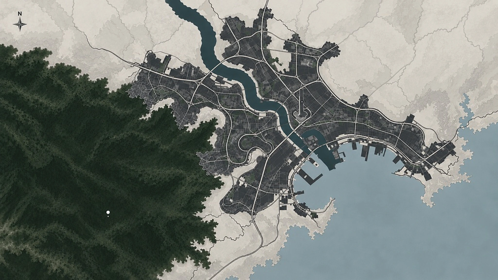

Distancia aproximada entre Elysium y el límite de la ciudad más cercana.
CARGANDO DOCUMENTACIÓN...
Una comunidad construida lejos de la infraestructura de NEXUS. Bajo la superficie, una red propia sostiene todo aquello que sus habitantes decidieron conservar.
Distancia aproximada entre Elysium y el límite de la ciudad más cercana.
Una administración central y dos sectores con prioridades distintas.
Una comunidad estable, independiente en sus sistemas y todavía vinculada a la superficie.
Elysium no existe porque el mundo haya terminado. Existe porque, para una parte de la población, continuar viviendo dentro de él dejó de ser una opción segura.

Refugio subterráneo independiente oculto en la zona boscosa, a 85 km del límite urbano y fuera de la red de Nexus.
La superficie y el subsuelo forman parte de un mismo modelo. Girá la proyección, acercate y seleccioná las zonas para consultar sus registros.
La representación es conceptual, no está a escala y no constituye un plano arquitectónico definitivo. La posición exacta de accesos, instalaciones y niveles se ajustará cuando quede establecida en el lore.
Documento narrativo íntegro. Los fragmentos se presentan en su continuidad original, sin intercalar subtítulos nuevos dentro del relato.
Las prioridades de Sanctum y The Shelter no siempre coinciden, pero ninguna de las dos áreas puede sostener Elysium por separado.
NEXUS no es un sector de Elysium. Es la infraestructura tecnológica y corporativa de la que la comunidad procura mantenerse independiente.
Una tecnología desarrollada inicialmente para interpretar señales neuronales, facilitar procesos médicos y conectar a sus usuarios con servicios compatibles. Su expansión terminó integrándola en hospitales, empresas y organismos públicos. La actualización de 2072 alteró esa relación para millones de personas.
Tableros de referencia utilizados para orientar la identidad visual y el ambiente de Elysium.